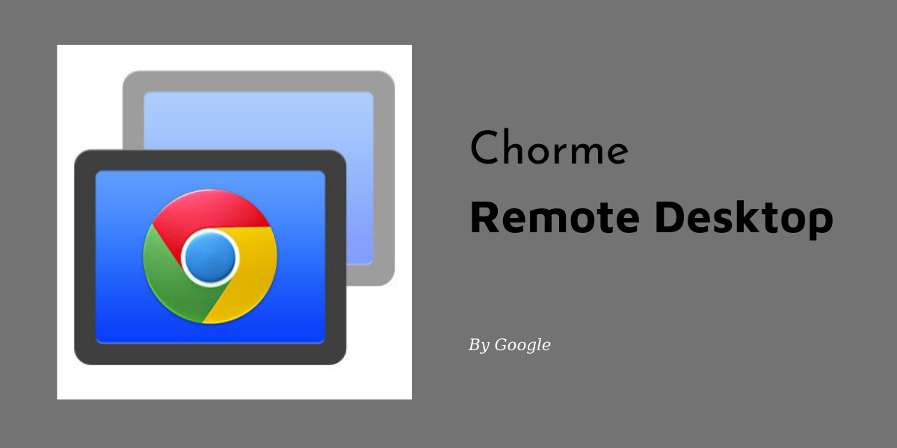
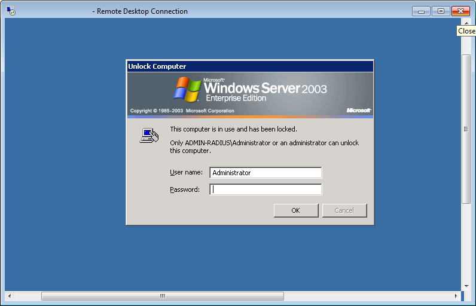
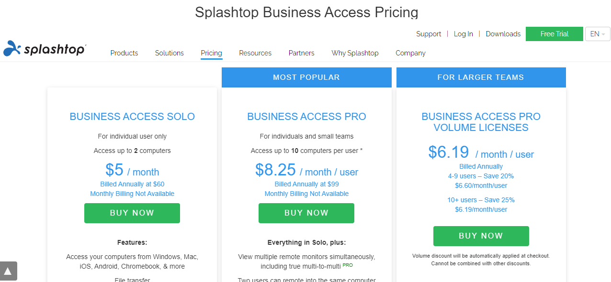
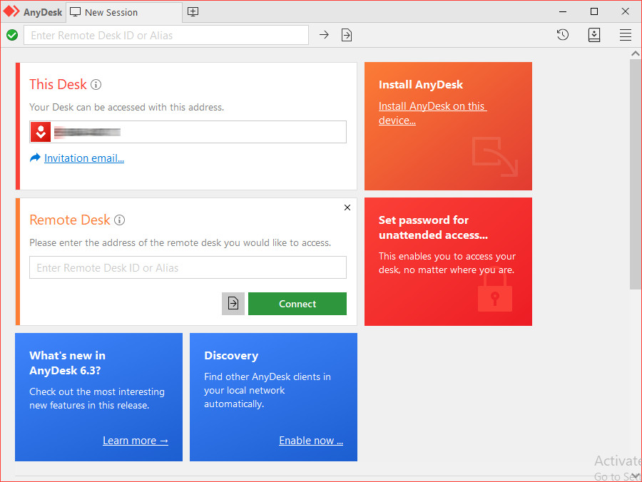
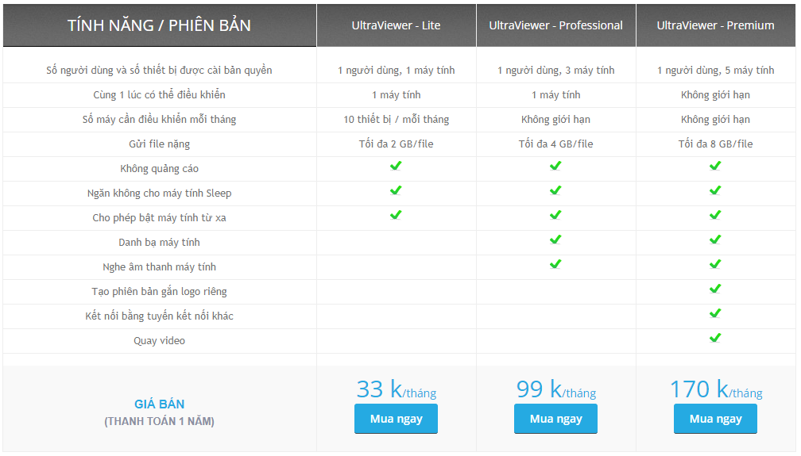

Top 5 phần mềm thay thế TeamViewer miễn phí tốt nhất 2022
Những năm gần đây, do ảnh hưởng của dịch bệnh và xu hướng làm việc trực tuyến trở nên phổ biến trên toàn cầu, nhu cầu điều khiển máy tính từ xa ngày càng tăng cao. Vậy ngoài TeamViewer đã khá thông dụng với đa số người dùng, còn có những giải pháp nào tương tự giúp hỗ trợ công việc của bạn không? Dưới đây là Top 5 phần mềm thay thế Teamviewer miễn phí tốt nhất 2021.
1. Tại sao nên sử dụng các phần mềm thay thế TeamViewer miễn phí?
Teamviewer được biết đến như 1 phần mềm giúp kết nối và điều khiển từ xa hai hay nhiều máy tính khác nhau ở bất kỳ nơi đâu. Khi sử dụng Teamviewer, bạn có thể dễ dàng chia sẻ các file dữ liệu, chia sẻ màn hình, trao đổi thông tin và tổ chức các buổi hội thảo trên web mà không cần gặp mặt trực tiếp.
Bên cạnh đó, Teamviewer còn tương thích trên nhiều hệ điều hành khác nhau như Windows, Chrome OS, Linux, MacOS, IOS, Android, …; cài đặt được trên máy tính và các thiết bị di động giúp thuận tiện cho quá trình sử dụng .
Tuy đem lại khá nhiều tiện ích, phần mềm này cũng khiến không ít người sử dụng cảm thấy phiền toái và mong muốn tìm kiếm một phần mềm thay thế Teamviewer miễn phí vì một số lý do sau:
1.1 Bản TeamViewer miễn phí không ổn định
Mặc dù có cung cấp phiên bản miễn phí cho người dùng cá nhân với mục đích phi thương mại, nhưng không phải lúc nào bản Teamviewer Free cũng đem đến trải nghiệm dễ chịu cho người dùng.
Trên thực tế, bạn có thể thường xuyên gặp tình trạng bị giới hạn số lần sử dụng và bị thoát - mất kết nối đột ngột sau mỗi 5 phút, gây bất tiện và khó khăn khi đang trực tuyến. Điều này có thể xảy ra ngay cả khi đường truyền kết nối internet của bạn vẫn đang hoạt động hoàn hảo.
Ngoài ra, sau một thời gian sử dụng, khách hàng dùng miễn phí cũng hay bị hệ thống nhầm lẫn thành khách hàng dùng thương mại và hiện lên thông báo yêu cầu trả phí để được tiếp tục sử dụng.
1.2 Chi phí cao đối với phiên bản TeamViewer trả phí
Chi phí cao là một rào cản gây khó khăn cho nhiều khách hàng doanh nghiệp muốn tiếp cận các phiên bản cao cấp của Teamviewer.

Đối với bản Business cho một người dùng, bạn cần trả 610.8$/ năm. Ở phiên bản Premium cho nhiều người dùng và Corporate cho nhóm, khoản phí cần trả lần lượt là 1234.8$ và 2482.8$/năm.
So với các công cụ cùng tính năng trên thị trường, mức chi phí này từ Teamviewer là khá đắt và không hề dễ chịu cho các người dùng cá nhân với mục đích thương mại và các doanh nghiệp vừa và nhỏ. Bạn hoàn toàn có thể tìm được những phần mềm thay thế Teamviewer miễn phí hoặc mất phí nhưng dễ chi trả hơn rất nhiều.
1.3 Tính năng bật máy tính từ xa (Wake On Lan) khó sử dụng
Để có thể bật máy tính từ xa khi máy tính đã tắt hoặc đang ngủ bằng phần mềm Teamviewer, bạn cần thiết lập một loạt các thao tác phức tạp như sau:
- Phần cứng máy tính cần bật từ xa có hỗ trợ tính năng Wake On Lan
- Chỉnh cấu hình BIOS và chỉnh card mạng
- Thực hiện kết nối máy tính cần bật từ xa với tài khoản Teamviewer
- Thiết lập một chiếc máy tính trung gian nằm cùng trong mạng nội bộ với máy tính bật từ xa để tiến hành đánh thức khi cần.
Như vậy, để sử dụng được tính năng Wake On Lan, đòi hỏi bạn cần am hiểu một chút kiến thức về kỹ thuật để thực hiện bật máy tính từ xa. Đặc biệt, việc phải sử dụng một máy tính trung gian bị đánh giá là khá lắng nhằng, rắc rối. Bạn hoàn toàn có thể bật máy tính từ xa bằng các phần mềm thay thế Teamviewer miễn phí khác đơn giản hơn nhiều.
1.4 Chia sẻ file qua TeamViewer khó khăn
Theo nhiều phản hồi của các khách hàng, họ thường gặp nhiều hạn chế khi thực hiện chia sẻ các tệp tin có kích thước lớn qua TeamViewer.
Điều này có thể làm mất nhiều thời gian, đôi khi tệp truyền đi gặp sự cố và không thể thực hiện được. Giả sử bạn đang trong cuộc họp hoặc hội thảo trực tuyến với khách hàng, việc truyền tệp chậm trễ sẽ gây nhiều khó chịu cho đối tác và làm ảnh hưởng đến tiến độ công việc của bạn.
1.5 Một số lý do khác
Ngoài ra, Teamviewer còn có một số nhược điểm khác có khả năng gây khó khăn trong quá trình sử dụng phần mềm của bạn như:
- Phần mềm có dung lượng lớn lên đến 33 MB có thể làm chậm tốc độ tải về và cài đặt trên thiết bị.
- Mở cửa số chat khó .Thiết kế font chữ hơi khó nhìn với một số khách hàng. Chưa có tính năng xem lại lịch sử chat.
- Vấn đề bảo mật còn nhiều tồn tại…
Đọc thêm: Tại sao không nên mua bản quyền TeamViewer?
2. Top 5 phần mềm thay thế Teamviewer miễn phí tốt nhất 2021.
Nếu bạn đang gặp nhiều hạn chế và khó khăn như trên, bạn có thể tham khảo một số phầm mềm thay thế Teamviewer miễn phí dưới đây để có thêm sự lựa chọn tối ưu hơn:
2.1 Chrome Remote Desktop
Chrome Remote Desktop là ứng dụng điều khiển máy tính từ xa hoàn toàn miễn phí chuyên dùng cho máy tính sử dụng trình duyệt Chrome hoặc Chromebook. Với ứng dụng này bạn có thể dễ dàng kết nối 2 máy tính trong cùng mạng nội bộ.

Chrome Remote Desktop được kết nối và hoạt động trên nhiều hệ điều hành như: Windows, Mac OS, Linux,… Bạn chỉ cần tải xuống ứng dụng cho nền tảng máy tính bạn chọn, khởi động và làm theo hướng dẫn để thiết lập.
Ưu điểm lớn nhất của tiện ích này chính là tính ứng dụng cao và dễ dàng thao tác, kể cả khi bạn không biết nhiều về công nghệ. Tuy nhiên, phần mềm cũng còn nhiều hạn chế như không có tính năng chat, không chia sẻ được file, không hỗ trợ in tệp từ xa sang máy in cục bộ
Nếu nhu cầu của bạn đơn giản chỉ là truy cập máy tính từ xa và hỗ trợ cơ bản, đừng bỏ qua phần mềm thay thế TeamViewer miễn phí này nhé.
2.2 Window Remote Desktop
Window Remote Desktop là công cụ điều khiển máy tính từ xa được tích hợp sẵn của Windows. Nếu bạn đang sử dụng hệ điều hành này và tìm kiếm một phần mềm thay thế Teamviewer miễn phí, ổn định, an toàn thì đây chính là thứ bạn cần.

Là ứng dụng có sẵn trong hệ điều hành Windows, chính vì vậy mà khả năng tương thích là rất cao. Bạn không cần phải cài đặt mà vẫn có thể sử dụng dễ dàng. Tốc độ điều khiển máy nhanh vì không phải qua Server của 1 hãng khác.
Tuy nhiên, vì được thiết kế chủ yếu để điều khiển máy chủ hoặc máy của chính mình, Window Remote Desktop không có nhiều tính năng cho người dùng lựa chọn. Vì vậy nếu bạn có những yêu cầu phức tạp trong quá trình sử dụng thì sẽ gặp phải những bất tiện nhất định.
Cũng chính vì vậy, bạn sẽ gặp nhiều khó khăn và hạn chế để hỗ trợ đối tác từ xa nếu sử dụng phần mềm này. Với Window Remote Desktop, bạn chỉ có thể điều khiển được máy tính khi máy tính đó đã log off. Có nghĩa là nếu bạn muốn hỗ trợ một ai đó, bạn sẽ phải bảo họ log off máy rồi cho bạn địa chỉ IP của họ cùng với tài khoản đăng nhập vào Windows thì bạn mới điều khiển vào máy tính của họ được. Rõ ràng là bạn không thể sử dụng nó để hỗ trợ khách hàng được!
2.3 Splashtop Remote
Splashtop Remote là một trong những ứng dụng có thể thay thế TeamViewer miễn phí tốt nhất hiện nay. Với Splashtop Remote, bạn có thể dễ dàng điều khiển và truy cập máy tính từ xa bằng các thiết bị di động khác như như máy tính bảng, điện thoại dù bạn không có ở nhà hoặc nơi làm việc!

Giống như TeamViewer, Splashtop hỗ trợ rất tốt cho các thiết bị sử dụng hệ điều hành phổ biến như Windows, iOS, Android, Linux, MacOS hay Windows Phone. Splashtop cho phép sử dụng hoàn toàn miễn phí đối với nhu cầu sử dụng cá nhân trên mạng cục bộ của bạn. Nếu muốn truy cập máy tính từ mạng khác thì bạn cần trả phí để mua Gói truy cập mọi nơi với mức 4,99 $ /tháng hoặc 16,99 $/ năm cho phép bạn truy cập các máy tính từ xa từ bất kỳ đâu trên internet.
Ngoài ra, nếu nhu cầu sử dụng của bạn đòi hỏi nhiều tính năng hơn, Splashtop có đa dạng các gói dịch vụ như bản Bussiness Solo ( 60$/năm), Bussiness Access Pro (99$/năm), …
Một trong những ưu điểm lớn nhất của Splashtop là tốc độ làm mới màn hình và khả năng truyền tải âm thanh, video từ xa rất tốt. Nếu bạn đang công tác trong ngành giáo dục và muốn tạo ra một lớp học ảo để dễ điều khiển thì đây cũng là lựa chọn khá tuyệt vời nên tham khảo.
2.4 Anydesk
Anydesk là phần mềm điều khiển máy tính từ xa quen thuộc và đang dần trở thành một đối trọng đáng gờm của Teamviewer trong những năm gần đây. Hiện nay, AnyDesk triển khai 4 phiên bản sử dụng bao gồm Free (miễn phí), Lite (rút gọn), Professional (chuyên nghiệp) và Enterprise (doanh nghiệp). Mức giá cho các bản trả phí lần lượt là 119$, 239$ và liên hệ trực tiếp đối với bản cho doanh nghiệp.

Cũng giống như Teamviewer, Anydesk được hỗ trợ đa dạng trên nhiều nền tảng như: Windows, macOS, Linux, Android, FreeBSD, iOS... Nếu bạn là người dùng sử dụng với mục đích cá nhân, Anydesk là phần mềm thay thế TeamViewer miễn phí và vô cùng hiệu quả mà bạn hoàn toàn có thể cân nhắc và trải nghiệm. Một số ưu điểm nổi trội có thể dễ dàng nhận thấy ở Anydesk như:
- Tính năng truyền file và truyền âm thanh nhanh chóng, gọn nhẹ
- Cho phép người dùng tùy chỉnh chất lượng hình ảnh và tốc độ trễ khi điều khiển máy khách
- Cài đặt và vận hành đơn giản. Bạn không cần đăng ký mà chỉ cần tải xuống và sử dụng luôn
- Dung lượng nhẹ hơn nhiều so với Teamviewer. Thao tác dễ dàng tiện lợi
- Tự động cập nhật các phiên bản phần mềm mới…
Tuy nhiên, AnyDesk có những thiết kế khác biệt với TeamViewer và có thể biến thành nhược điểm làm người dùng không muốn chuyển qua sử dụng nếu đã dùng quen TeamViewer. Ví dụ như khung giao diện điều khiển bé, khó quan sát hơn TeamViewer. Hoặc mỗi lần kết nối tới đối tác lại cần đối tác bấm cho phép mới kết nối được, không may trong quá trình điều khiển nếu bạn bị mất kết nối lại phải liên hệ đối tác, mất nhiều thời gian.
Ngoài ra, tính năng bật máy từ xa của Anydesk cũng khó sử dụng giống như TeamViewer.… Cần lưu ý thêm rằng, thời gian gần đây Anydesk cũng dần hạn chế phiên bản miễn phí khi đưa ra thông báo yêu cầu trả phí trên những máy tính thực hiện quá 15 kết nối trong 6 tuần.
2.5 UltraViewer - Phần mềm thay thế Teamviewer miễn phí tốt nhất 2021
Là một phần mềm mới ra mắt trên thị trường không lâu, UltraViewer hứa hẹn sẽ đem đến một cuộc cách mạng mới trong lĩnh vực điều khiển và hỗ trợ máy tính từ xa. Sở hữu nhiều ưu điểm nổi bật, UltraVewer xứng đáng là phần mềm thay thế TeamViewer miễn phí tốt nhất 2021.
Mức giá rẻ nhất
Nếu bạn là người dùng cá nhân có nhu cầu sử dụng ít cho mục đích phi thương mại, bạn có thể trải nghiệm phần mềm Ultraviewer với phiên bản hoàn toàn miễn phí. Bạn sẽ không gặp phải bất kỳ tình trạng nào như giới hạn số phiên, ngắt kết nối đột ngột, thông báo yêu cầu trả phí…giống như Teamviewer khi sử dụng bản miễn phí.

Nếu bạn là cá nhân hoặc doanh nghiệp thường xuyên cần sử dụng phần mềm điều khiển máy tính từ xa để phục vụ cho công việc, các phiên bản Ultraviewer trả phí là cực kỳ rẻ và dễ dàng chi trả.
Các phiên bản trả phí hiện đang được Ultraviewer triển khai bao gồm Lite, Professional và Premium.
Mức giá cạnh tranh và rẻ nhất thị trường lần lượt là 369.000 VNĐ , 1.188.000 VNĐ , 2.040.000 VNĐ/ năm. Nếu bạn có nguồn ngân sách hạn hẹp và cần tiết kiệm tối đa, UltraViewer là giải pháp tuyệt vời nhất dành cho bạn.
Nâng cấp miễn phí
Nếu như Teamviewer vẫn đang tiến hành thu phí để nâng cấp lên các phiên bản mới thì UltraViewer lại cho phép bạn nâng cấp hoàn toàn miễn phí. Bạn sẽ được thừa hưởng những tính năng mới, ưu việt và cao cấp hơn của bản cập nhật mà không cần lo về vấn đề chi phí. Lựa chọn Ultraviewer sẽ giúp tối ưu hóa nguồn ngân sách.
Bật máy tính từ xa dễ dàng
Để sử dụng tính năng bật máy tính từ xa qua TeamViewer, bạn cần thiết lập một loạt các thao tác phức tạp và cần thiết phải có 1 máy tính trung gian thứ 3 tham gia vào quá trình này.
Không rắc rối như Teamviewer, UltraViewer cho phép bạn thực hiện Wake On Lan một cách dễ dàng chỉ trong vài phút. Điều này có thể diễn ra bất kỳ lúc nào với những thiết lập từ trước. Một tính năng tuyệt vời để trở thành phần mềm thay thế Teamviewer miễn phí tốt nhất 2021.
Kết nối cùng lúc không giới hạn
Đối với phiên bản trả phí UltraViewer Premium cao cấp nhất, bạn có thể cùng lúc điều khiển máy tính từ xa và hỗ trợ cho 2, 3 ,5 khách hàng thậm chí nhiều hơn thế nữa. Điều này giúp công việc của bạn được tiếp diễn liên tục, hỗ trợ nhiều hơn và thao tác ít hơn.
Với UltraViewer, bạn được điều khiển tự do mà không lo bị giới hạn hay trả thêm phí như TeamViewer.
Cài đặt và vận hành dễ dàng
UltraViewer có giao diện thân thiện, từ khâu cài đặt đến kết nối và sử dụng đều rất dễ dàng, phù hợp cho mọi người dùng máy tính.
Ngoài ra, Ultraviewer còn khắc phục một số khuyết điểm của phần mềm TeamViewer như thiết kế cửa sổ chat dễ nhìn, tiện lợi cho hỗ trợ nhiều người cùng lúc, chia sẻ file nhanh chóng, tính bảo mật - an toàn cao…
Hiện Ultraviewer mới chỉ hỗ trợ trên hệ điều hành Window và sẽ được nâng cấp thêm nữa trong thời gian sắp tới. Hãy đăng ký và tải về để trải nghiệm phần mềm thay thế TeamViewer miễn phí tốt nhất nhé.


Viết bình luận (Cancel Reply)